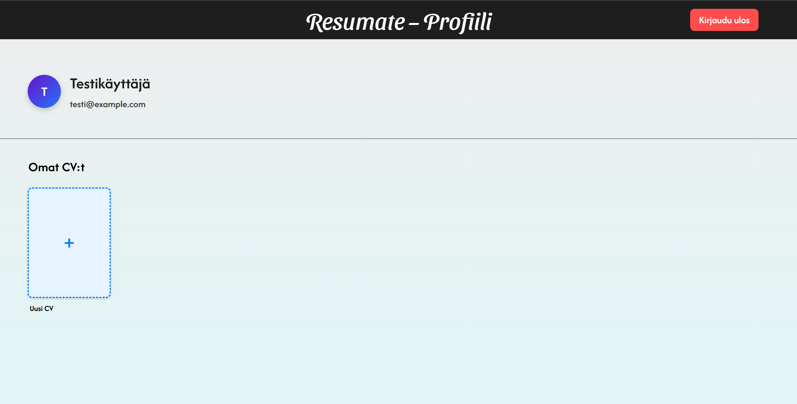
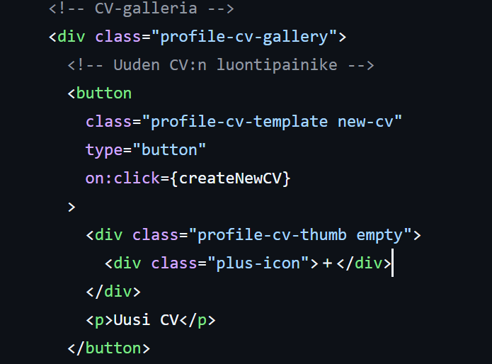
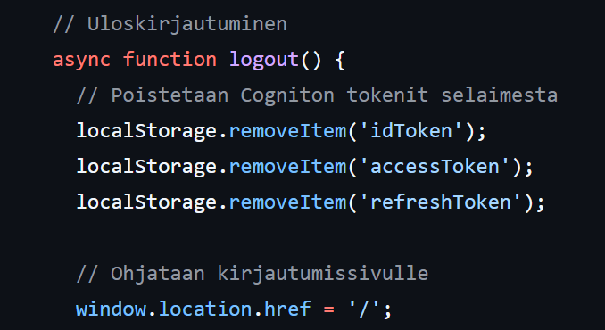

Projektikuvat



Koodaus ja SM tehtävät jakautuivat niin, että noin 60% ajastani koodasin, SM 10% ja 20% käytetystä ajasta opiskelin uutta, päivitin ja tarkastin projektinhallintaa ja patistin muita.
Toimin pääasiassa frontend-kehittäjänä, mutta suunnittelin projektia PO kanssa. Dokumentoin suuren osan kaikesta.
Käytin HTML:ää, CSS:ää ja JavaScriptiä, sekä suunnitteluun Figmaa ja GitHubia versionhallintaan.

Koen, että osasin visuaalista suunnittelua Figmalla, ja tätä myötä myös frontendia ja eri kirjastoja hyödyntäen luoda verkkosivua eteenpäin.
Olen kehittynyt frontend kehittäjänä eteenpäin paljon, ja koodaaminen tuntuu jatkuvasti helpommalta kuin aikaisemmin. Osaan myös jäsennellä työt ja aikatauluttaa asioita paljon paremmin.
Päätyö näkyy oikeana sivuna tai sivun osana, jota tein yhteiseen Resumate projektiin. Frontendiä yhdessä toisen kehittäjän kanssa, paitsi profiilisivu on täysin minun itse tekemä, sekä jokainen CV teema. Yhteistyössä toisen kehittäjän kanssa kyllä sovimme nimeämiskäytännöt niin, että "placeholderit" ovat oikein myös cv tietojentäyttölomakkeilla. Sivutyöt näkyvät enemmän olevassa dokumentaatiossa ja työnjaossa, kuten lähes kaikki backlogien hallinta, muuttelu ja töiden jakautuminen oli minun harteilla.
Valitsin nämä kaksi teemaa, koska tässä on ensimmäinen ja viimeinen. Toinen näistä on se "default", jonka toinen tiimistäni suunnitteli Figmalla ja minä toteutin ja toinen on itse ajateltu. Olen näistä ylpeä, koska minulla meni hyvin kauan saada oikeat mittasuhteet näihin, jotta ne pysyy a4 kokoisena. Profiilisivun halusin nostaa, koska pääsin tekemään sitä itse jo aiemmin suunnitellun pohjalta kuten värit ja fontit, vaikka profiilisivua ei oltu figmalla edes suunniteltu. Halusin myös nostaa tähän yhden kohdan meidän backlogeista, koen että me tiiminä sekä itse paransimme työtä projektin edetessä, ja itse olin se joka aloitti näiden muokkaamisen palautteen perusteella.
Olen oppinut, että sovelluskehitys on monivaiheisempaa ja haastavampaa kuin olin aiemmin kuvitellut. Projektiopinnot ovat osoittaneet, että suunnittelu, yhteistyö ja jatkuva testaaminen ovat yhtä tärkeitä kuin itse koodaus. Lisäksi parikoodaus ja tiimityöskentely ovat osoittautuneet hyviksi tavoiksi oppia toisilta, jakaa tietoa ja kehittää omia taitoja käytännössä. Tämä kokemus on auttanut minua ymmärtämään, miten oppiminen ja osaamisen kehittyminen tapahtuvat tehokkaimmin yhdessä muiden kanssa
Kuinka muiden apu on korvaamatonta, ja kuinka muuttujia tulee jatkuvasti, vaikka kuvittelisi kaiken yksinkertaiseksi ja helpoksi.
Suuri tavoitteeni oli kehittää osaamistani frontend-kehityksessä sekä parantaa ryhmätyötaitoja ja kärsivällisyyttä. Frontend-osaamiseni kehittyi merkittävästi, koska jouduin tekemään paljon itsenäistä työtä, selvittämään ongelmia ja tutkimaan uusia ratkaisuja. Myös ryhmätyöskentely tarjosi arvokasta oppia: parikoodaus oli ajoittain haastavaa, mutta samalla erittäin opettavaista ja auttoi kehittämään yhteistyö- ja kommunikointitaitoja. Tavoitteena liiketoiminta, digitaalinen markkinointi ja visuaalinen suunnittelu jäivät vajaiksi, koska kuvittelin näiden olevan työnkuviani, mutta eivät toteutuneetkaan ja pääsin tekemään muuta. Tavoitteeksi asetetin itselle parantavani ryhmätyöskentelytaitoja, ja luottamaan muihin ja tässä epäonnistuttiin.
Näen tulevaisuuteni mahdollisuutena oppia uutta ja kehittää itseäni jatkuvasti. Haluan työskennellä projekteissa, joissa pääsen kohtaamaan haasteita, kokeilemaan uusia ratkaisuja ja vaikuttamaan siihen, että työ tuottaa konkreettista hyötyä sekä käyttäjille että tiimille.
Haluaisin työllistyä tehtäviin, joissa voin yhdistää DevOpsin ja frontend-kehityksen.Olen kiinnostunut sovellusten rakentamisesta ja ylläpidosta sekä käyttöliittymän kehittämisestä sujuviksi ja käyttäjäystävällisiksi. Haluan myös osallistua projektinhallintaan ja järjestelmien ylläpitoon, jotta ymmärrän koko kehitys prosessin ja voin kehittää teknisiä ja tiimityötaitojani.
Opintojakso tuki tavoitteitani erinomaisesti, erityisesti projektinhallinta- ja tiimityötaitojen kehittämisessä. Kurssi tarjosi mahdollisuuden kokeilla erilaisia tehtäviä vapaasti ja oppia uusia menetelmiä käytännön kautta. Opin paljon siitä, miten projektit etenevät työelämässä, ja sain arvokasta kokemusta yhteistyöstä tiimissä sekä ongelmien ratkaisemisesta, mikä vahvisti myös kärsivällisyyttä ja itsevarmuutta työskentelyssä.
Esimerkkinä, kuinka eri osat ovat jaettu eri osiin (section)

Right-column

Kuinka tiedostossa ollut data aina A4 kokoisena. Sama muissakin teemoissa.

Painike Luo uusi, joka vie itse cv luontisivulle.

Funktio poistaa kaikki tiedot kirjautumisesta.
